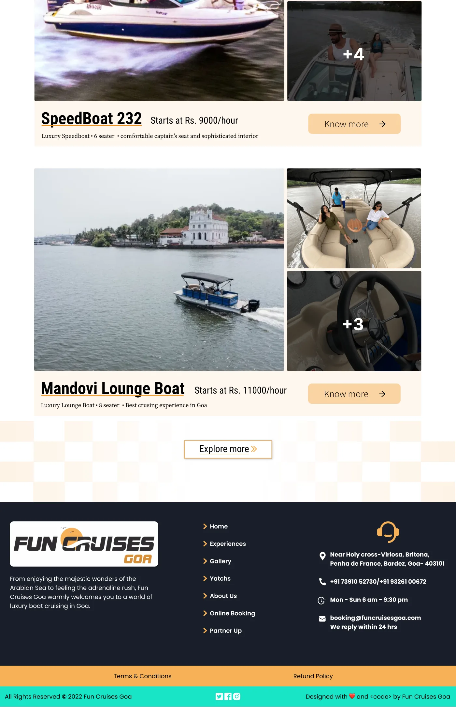

Fun Cruises GoaDesign study · 4 min read
Choosing a boat before making an enquiry.
A yacht-rental landing-page concept organised around capacity, price, and the next enquiry.
Read the case study
Fleet listings surface practical information next to the experience imagery.
View full size ↗01 The problem
Which questions can the fleet list answer before a visitor opens every option?
A visitor choosing a boat needs to know whether it fits their group and budget before making an enquiry. The Fun Cruises Goa artifact contains the building blocks for that decision: a prominent booking action, a description of the experience, fleet filters, and listings with seating capacity and starting hourly prices.
Designed for Group organiser considering a boat. Identify a suitable boat before making an enquiry.
User context Design assumption
Comparing options for a group occasion in Goa.
- The friction
- Capacity, starting price, and suitability must be read together.
- Design implication
- Keep the practical comparison close to each listing.
Example situation · illustrative scenario. Picture planning an outing with a group. Before an enquiry, the practical questions arrive: how many people fit, what does it cost, and which type of boat makes sense?
02 The outcome
A clearer route to a suitable enquiry.
I redesigned the landing and fleet-browsing page around boat type, capacity and starting rate. The imagery introduces the experience, while the listings give visitors something concrete to compare before enquiring. Availability and a completed reservation flow are outside the delivered concept.
More about the experience
- Decision criteria near the fleet. Filters appear before the visitor scans individual boats.
- Imagery with practical content. Listings pair the experience with capacity and price information.
03 Research & direction
The practical shortlist
The strongest part of the concept is its comparable fleet information: seating, starting rate, and boat type accompany the photographs.
Original fleet-discovery concept
- 3
- fleet filter dimensions
- Capacity
- visible on listings
- Enquiry
- core next step
My direction. I treated the landing page as a route into a suitable enquiry, with discovery criteria that narrow the choices.
More about the original process
I reviewed the original long-page design as a visitor journey from initial interest to a suitable fleet option. The available PDF shows the landing and fleet-discovery surface. It does not include completed reservation, payment, or availability states, so I describe the scope as discovery and enquiry.
The rates, capacities, address, and response-time copy visible in the old concept are historical design content. This case study uses their placement to explain hierarchy, rather than presenting them as current offers.
- Narrow
Use capacity, price, and type to find suitable options.
- Compare
Read practical information alongside the experience.
- Enquire
Confirm availability, inclusions, and the complete cost.
04 Design decisions
Help a group compare the boats.
Open a decision to see the reasoning and trade-off.
01Bring decision criteria into the fleet list
The design offers seating, price-order, and boat-type controls, with capacity and starting rate on individual listings.
Why this matters. A visitor should be able to rule out unsuitable options without opening every boat’s detail page.
The trade-off. Filters depend on consistent inventory data. Empty results and combinations that return no suitable boat would need explicit handling.
02Support both ready-to-book and exploratory visitors
The concept has a hero booking action and an enquiry route alongside fleet details.
Why this matters. Some visitors know what they want; others need clarification before committing. The page makes both next steps available.
The trade-off. Booking, getting a quote, and learning more can become competing calls to action. I would clarify which action each listing should lead to.
03Use imagery with practical content
Fleet photographs sit beside capacity, starting price, and short descriptions.
Why this matters. The images convey the experience while the text helps establish whether the option is suitable.
The trade-off. A starting hourly price does not communicate the full cost. Minimum duration, inclusions, fees, and availability would need to be explained next.
05 Reflection
Good discovery makes the next conversation more informed.
An enquiry should not look like a confirmed booking. I would make that distinction explicit, then add the inclusions, accessibility details and cancellation terms needed to discuss a trip. Prices in the original design are historical concept content.
What I would evaluate next proposed work
- ask a visitor planning for a group to choose a suitable option, explain the expected cost, and identify what remains to confirm.
- add a boat-detail page with availability, inclusions, accessibility information, cancellation terms, and a clear enquiry handoff.
Meet the chapter. Know how to take part.